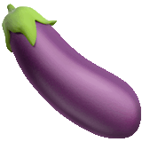

호랑이를 너무 좋아하는 사자 ㅋㅋ
댓글
가지달아?

리트리버랑 고양이 보는거 같냐
둘다 수컷
마지막에 장중이다 집중해라 짤 나오네ㅋㅋ
나도 호랑이한테 저렇게 비비고 싶다
수컷사자가 저렇게 끼부리는 애였구나 ㅋㅋㅋㅋ
극악무도한 E에게 물려버린 I로구나...
둘다 숫놈같은데..?
형아 콘
끼순이
호떡ㄷㄷ
호랑이 얼굴 줄무늬 모양 바뀌네
사자는 집단 생활을 해서 개인생활 하는 호랑이랑 다르게 동성애 형태도 간간히 보이기도 한다고 함
특히 형제들끼리 🍆형아❤️ 한다고 함
형아는 씨발
닉값합격
호랑이랑 사자 같이두니까 호랑이 왜케 살벌하게생겼냐 ㅋㅋㅋㅋ
개 웃는 표정처럼 사자도 웃는 표정이 있네ㅋㅋㅋㅋㅋㅋ
사자새끼 문신녀 취향이었네
둘이 교배가 가능함. 라이거라고 번식기능이 대신 없음.
"두놈은 숫놈이다"